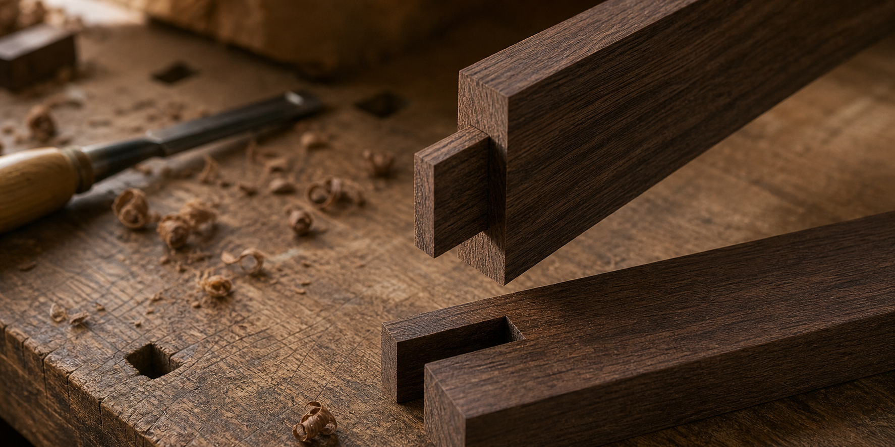

짜맞춤의 기본: 장부와 장부구멍이 가구를 지탱하는 방식

요약 설명:
원목 가구의 견고함은 나사나 접착제만으로 만들어지지 않습니다. 특히 의자, 테이블, 프레임 가구에서는 부재가 서로 물리적으로 맞물리는 구조가 중요합니다. 이 글에서는 가장 기본적이면서도 널리 쓰이는 장부와 장부구멍 짜맞춤을 중심으로, 가구의 안정감이 어디에서 생기는지 살펴봅니다.
검색 키워드:
- 원목 가구 짜맞춤
- 장부 장부구멍 구조
- mortise and tenon joinery
- 가구 제작 구조
- 원목 테이블 다리 접합
- 의자 프레임 구조
원목 가구를 볼 때 가장 먼저 눈에 들어오는 것은 수종, 색감, 상판의 무늬, 전체 실루엣입니다. 그러나 오래 쓰는 가구에서 정말 중요한 부분은 대개 눈에 잘 보이지 않습니다. 다리가 상판을 어떻게 받치는지, 의자의 앞다리와 뒷다리가 어떤 방식으로 연결되는지, 프레임의 힘이 어디로 흘러가는지 같은 구조가 가구의 실제 사용감을 결정합니다.
그중 장부와 장부구멍 짜맞춤은 원목 가구 제작에서 가장 오래되고 기본적인 연결 방식 중 하나입니다. 한 부재의 끝을 돌출된 장부로 만들고, 다른 부재에는 그 장부가 들어갈 구멍을 냅니다. 두 부재가 정확히 맞물리면 접착 면적이 넓어지고, 힘을 받는 방향이 안정되며, 가구가 흔들리지 않는 뼈대를 갖게 됩니다.
단순해 보이지만 좋은 장부맞춤은 치수, 비율, 결 방향, 사용 위치를 함께 보는 작업입니다. 같은 구조라도 어디에 쓰이느냐에 따라 깊이와 폭, 어깨의 형태, 보강 방식이 달라집니다.
장부와 장부구멍은 무엇인가
장부는 한쪽 목재 끝에 남겨 둔 돌출부입니다. 장부구멍은 그 장부를 받아들이기 위해 다른 목재에 파낸 홈입니다. 영어로는 보통 mortise and tenon이라고 부릅니다.
이 구조의 핵심은 두 부재가 단순히 표면끼리 붙는 것이 아니라, 한 부재가 다른 부재 안으로 들어가며 맞물린다는 점입니다. 그래서 힘을 받았을 때 접착제만 버티는 것이 아니라 목재의 형태 자체가 하중과 뒤틀림을 함께 견딥니다.
예를 들어 테이블 다리와 앞치마 부재를 연결할 때, 앞치마 끝에 장부를 만들고 다리에는 장부구멍을 냅니다. 장부가 구멍 안에 들어가면 앞치마는 다리 사이를 단단히 묶고, 다리는 옆으로 흔들리는 힘에 더 잘 버팁니다. 의자처럼 사람이 앉고 일어서며 반복적으로 힘을 주는 가구에서도 이 원리는 매우 중요합니다.
왜 단순한 맞대기보다 강할까
두 목재를 그냥 맞대어 붙이는 방식은 제작이 쉽지만, 힘을 받는 면이 제한적입니다. 접착면이 작고, 부재가 비틀리는 방향으로 힘을 받으면 연결부가 쉽게 약해질 수 있습니다.
장부맞춤은 몇 가지 면에서 더 안정적입니다.
- 장부가 장부구멍 안으로 들어가 접착 면적이 넓어진다.
- 어깨 부분이 부재의 위치를 잡아주어 흔들림을 줄인다.
- 하중이 한 점에만 몰리지 않고 부재 내부로 분산된다.
- 나사나 금속 철물이 보이지 않아 외형이 차분하다.
- 정확하게 제작하면 장기간 사용해도 구조적 긴장감이 유지된다.
특히 가구는 한 번의 큰 힘보다 작은 힘을 반복해서 받는 경우가 많습니다. 의자는 앉을 때마다 앞뒤와 좌우로 미세하게 움직이고, 테이블은 밀고 당기는 힘을 반복적으로 받습니다. 짜맞춤은 이런 생활 속 반복 하중을 견디는 데 강점이 있습니다.
어깨가 만드는 정확한 선
장부맞춤에서 장부만큼 중요한 것이 어깨입니다. 어깨는 장부 주변에 남는 단차 부분으로, 두 부재가 만났을 때 겉면이 정확히 맞닿는 기준면이 됩니다.
어깨가 깨끗하게 맞으면 연결부가 단정해 보일 뿐 아니라 구조적으로도 안정됩니다. 어깨가 부재를 받쳐 주기 때문에 장부가 구멍 안에서 한쪽으로만 힘을 받는 것을 줄이고, 외부에서 보이는 이음새도 차분하게 정리됩니다.
반대로 어깨가 어긋나거나 빈틈이 생기면 가구는 실제보다 덜 견고해 보입니다. 작은 틈 하나가 전체 제작 완성도에 대한 인상을 바꾸기도 합니다. 그래서 좋은 짜맞춤은 내부의 강도와 외부의 선이 함께 맞아야 합니다.
비율은 가구의 쓰임에 따라 달라진다
장부는 무조건 두껍고 깊을수록 좋은 것이 아닙니다. 지나치게 큰 장부는 장부구멍을 내는 부재를 약하게 만들 수 있고, 너무 얇은 장부는 힘을 충분히 받지 못합니다. 중요한 것은 부재의 두께와 사용 위치에 맞는 비율입니다.
실제 제작에서는 다음 요소를 함께 봅니다.
- 부재의 전체 두께와 폭
- 하중이 주로 들어오는 방향
- 접합부가 외부에 보이는지 여부
- 의자처럼 반복 하중이 큰 가구인지, 선반처럼 정적인 가구인지
- 다른 보강 구조가 함께 들어가는지
테이블 다리와 앞치마처럼 큰 힘을 받는 곳에서는 충분한 길이와 접착 면적이 중요합니다. 반면 작은 액자형 문이나 가벼운 프레임에서는 전체 비례를 해치지 않는 섬세한 장부가 더 어울립니다. 같은 장부맞춤이라도 가구의 성격에 따라 표정이 달라지는 이유입니다.
숨기는 짜맞춤과 드러내는 짜맞춤
장부맞춤은 외부에서 거의 보이지 않게 만들 수도 있고, 일부러 드러내 디자인 요소로 사용할 수도 있습니다.
숨기는 짜맞춤은 표면이 조용하고 정돈된 가구에 잘 맞습니다. 미니멀한 테이블이나 캐비닛에서는 구조가 겉으로 드러나지 않아도 충분히 견고해야 합니다. 이때 짜맞춤은 가구 뒤편에서 조용히 역할을 합니다.
드러내는 짜맞춤은 제작의 정직함을 보여줍니다. 관통 장부처럼 장부가 반대편까지 지나가 보이도록 만들면, 사용자는 이 가구가 어떻게 조립되었는지 눈으로 읽을 수 있습니다. 쐐기나 핀을 더해 구조적 보강과 장식성을 함께 얻는 방식도 있습니다.
다만 드러내는 구조는 더 많은 책임을 요구합니다. 선이 조금만 어긋나도 쉽게 보이고, 장식처럼 보이지만 실제 구조와 맞지 않으면 어색해집니다. 구조를 드러낼수록 제작의 정확도도 함께 드러납니다.
철물을 쓰지 않는다는 말의 의미
짜맞춤 가구를 이야기할 때 “철물을 쓰지 않는다”는 표현을 자주 듣습니다. 그러나 중요한 것은 철물을 무조건 배제하는 것이 아닙니다. 구조가 먼저 힘을 받도록 설계하고, 필요할 때 보조적인 방식으로 철물을 사용하는 태도가 더 현실적입니다.
원목 가구에서 철물은 빠르고 편리한 해결책이 될 수 있습니다. 분해와 이동이 필요한 가구에는 철물이 적합한 경우도 많습니다. 하지만 다리와 프레임처럼 지속적으로 힘을 받는 곳에서는 목재끼리 맞물리는 구조가 기본이 되어야 안정감이 좋습니다.
좋은 제작은 전통 방식만 고집하지 않습니다. 어떤 곳에는 장부맞춤이 맞고, 어떤 곳에는 볼트 체결이 맞으며, 어떤 곳에는 두 방식을 함께 쓰는 편이 낫습니다. 중요한 것은 보이는 방식보다 힘이 실제로 어떻게 전달되는지를 이해하는 일입니다.
생활 속에서 짜맞춤을 보는 방법
가구를 고를 때 모든 내부 구조를 확인하기는 어렵습니다. 그래도 몇 가지는 살펴볼 수 있습니다.
- 다리와 프레임 연결부에 흔들림이 없는지 확인한다.
- 의자를 살짝 비틀었을 때 삐걱거림이나 유격이 큰지 본다.
- 보이는 이음새의 선이 고르고 단정한지 살핀다.
- 상판이나 좌판 아래 구조가 지나치게 빈약하지 않은지 확인한다.
- 제작자에게 다리와 프레임을 어떤 방식으로 연결했는지 질문해 본다.
좋은 가구는 손으로 밀었을 때 단단한 느낌이 있습니다. 무겁기만 한 것이 아니라, 힘을 받는 방향이 안정되어 있다는 느낌입니다. 짜맞춤은 이런 감각을 만드는 중요한 이유 중 하나입니다.
목간의 시선
목간이 원목 가구를 볼 때 중요하게 생각하는 것은 재료의 아름다움과 구조의 정직함입니다. 좋은 나무를 고르는 일만큼, 그 나무를 어떻게 연결할지 결정하는 일이 중요합니다.
상판의 결이 아무리 아름다워도 다리 구조가 약하면 오래 쓰기 어렵습니다. 의자의 곡선이 아름다워도 프레임이 흔들리면 매일의 사용감은 불안해집니다. 반대로 구조가 단단한 가구는 시간이 지나도 자세가 흐트러지지 않고, 생활 속에서 신뢰감을 줍니다.
장부와 장부구멍은 오래된 기술이지만 낡은 방식은 아닙니다. 오늘의 가구에서도 여전히 유효한 이유는 분명합니다. 목재를 목재답게 연결하고, 힘을 자연스럽게 흘려보내며, 보이지 않는 곳에서 사용자의 생활을 조용히 받쳐 주기 때문입니다.
참고한 자료
- USDA Forest Products Laboratory,
Wood Handbook: Wood as an Engineering Material - W. Tegel et al.,
Early Neolithic Water Wells Reveal the World's Oldest Wood Architecture, PLOS ONE - Terrie Noll,
The Joint Book, Chartwell Books - 일반 가구 제작과 목공 짜맞춤에 관한 공방 실무 자료